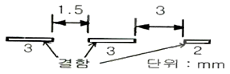

침투비파괴검사기능사 (2015-10-10 기출문제)
1과목: 침투탐상시험법(대략구분)
1. 철강 제품의 방사선투과검사 필름상에 나타나는 결함 중 건전부보다 결함의 농도가 밝게 나타나는 것은?
- 슬래그 혼입
- 융합불량
- 텅스텐 혼입
- 용입부족
(정답률: 66%)

2. 전자유도시험의 적용분야로 적합하지 않은 것은?
- 세라믹 내의 미세균열
- 비철금속 재료의 재질시험
- 철강 재료의 결함탐상시험
- 비전도체의 도금막 두께 측정
(정답률: 55%)
3. 자분탐상시험의 적용에 대한 설명으로 틀린 것은?
- 강 용접부의 표면 결함검사에 적용된다.
- 철강재료의 터짐 등 표면결함의 검출에 적합하다.
- 오스테나이트 스테인리스강에 적합하다.
- 표면직하 결함 검출이 가능하다.
(정답률: 73%)
4. 금속 내부 불연속을 검출하는데 적합한 비파괴검사법의 조합으로 옳은 것은?
- 와전류탐상시험, 누설시험
- 누설시험, 자분탐상시험
- 초음파탐상시험, 침투탐상시험
- 방사선투과시험, 초음파탐상시험
(정답률: 85%)
5. 다음 중 침투탐상시험에서 쉽게 찾을 수 있는 결함은?
- 표면결함
- 표면 밑의 결함
- 내부결함
- 내부기공
(정답률: 87%)
6. 높은 원자번호를 갖는 두꺼운 재료나 핵연료봉과 같은 물질의 결함검사에 적용되는 비파괴검사법은?
- 적외선검사(TT)
- 음향방출검사(AET)
- 중성자투과검사(NRT)
- 초음파탐상검사(UT)
(정답률: 86%)
7. 시험체의 내부와 외부, 즉 계와 주위의 압력차가 생길 때 주위의 압력은 대기압으로 두고, 계의 압력을 가압하거나 감압하여 결함을 탐상하는 비파괴검사법은?
- 누설시험
- 침투탐상시험
- 초음파탐상시험
- 와전류탐상시험
(정답률: 88%)
8. 자분탐상검사 방법 중 선형자계를 형성하는 검사법은?
- 축통전법, 자속관통법
- 코일법, 극간법
- 전류관통법, 축통전법
- 코일법, 전류관통법
(정답률: 71%)
9. 탐촉자의 이동 없이 고정된 지점으로부터 대형설비 전체를 한번에 탐상할 수 있는 초음파탐상검사법은?
- 유도 초음파법
- 전자기 초음파법
- 레이저 초음파법
- 초음파 음향공명법
(정답률: 54%)
10. 침투탐상시험의 특성에 대한 설명 중 틀린 것은?
- 큰 시험체의 부분 검사에 편리하다.
- 다공성인 표면의 불연속 검출에 탁월하다.
- 표면의 균열이나 불연속 측정에 유리하다.
- 서로 다른 탐상액을 혼합하여 사용하면 감도에 변화가 생긴다.
(정답률: 81%)
11. 고체가 소성 변형하며 발생하는 탄성파를 검출하여 결함의 발생, 성장 등 재료 내부의 동적 거동을 평가하는 비파괴검사법은?
- 누설검사
- 음향방출시험
- 초음파탐상시험
- 와전류탐상시험
(정답률: 60%)
12. 와전류탐상검사에서 시험체를 시험코일 내부에 넣고 시험을 하는 코일로써, 선 및 직경이 작은 봉이나 관의 자동검사에 널리 이용되는 것은?
- 표면코일
- 프로브코일
- 관통코일
- 내삽코일
(정답률: 61%)
13. 누설검사에 사용되는 단위인 1atm과 값이 다른 것은?
- 760mmHG
- 760torr
- 10.33kg/cm2
- 1013mbar
(정답률: 68%)
14. 초음파탐상검사에서 보통 10mm이상의 초음파빔 폭보다 큰 결함크기 측정에 가장 적합한 기법은?
- DGS선도법
- 6dB drop법
- 20dB drop법
- PA법
(정답률: 72%)
15. 침투지시모양의 생성에 대한 설명으로 옳은 것은?
- 지시모양이 생성되는 속도는 불연속의 특성을 평가하는 데 도움이 되지 않는다.
- 지시모양으로 두께의 정보를 정량화할 수 있다.
- 침투지시모양은 시험체의 재질이나 불연속의 발생 원인에 관계없이 균일하게 나타난다.
- 지시모양의 크기는 불연속 내부의 체적과 밀접한 관계가 있다.
(정답률: 54%)
16. 침투탐상시험에 사용되는 재료나 설비는 계속 사용함에 따라 신뢰성이 떨어진다. 신뢰성을 확보하기 위한 방법으로 가장 효과적인 것은?
- 작업시마다 새로운 재료와 설비를 사용한다.
- 1년마다 재료나 설비를 새 것으로 사용한다.
- 일상점검 또는 일정기간마다 정기점검으로 관리한다.
- 작업시마다 수세성, 후유화성, 용제제거성 등 시험방법을 달리하여 사용한다.
(정답률: 84%)
17. 수세성 염색침투액과 습식현상법을 조합하여 탐상할 경우 탐상순서로 옳은 것은?
- 전처리→침투처리→세척처리→현상처리→건조처리
- 전처리→침투처리→세척처리→건조처리→현상처리
- 전처리→세척처리→건조처리→침투처리→현상처리
- 전처리→건조처리→침투처리→현상처리→세척처리
(정답률: 59%)
18. 형광침투탐상시험시 현상제를 적용하기 전에 잉여 침투액이 제거되었는가를 확인하는 방법으로 가장 적합한 것은?
- 손가락으로 문질러 본다.
- 자외선등으로 비추어 본다.
- 물에 적신 붓으로 칠해 본다.
- 제거 용지로 표면을 닦아 본다.
(정답률: 78%)
19. 침투탐상시험에 대한 설명으로 틀린 것은?
- 검사체의 표면상태는 침투시간 결정에 도움이 된다.
- 예상 불연속부의 종류에 따라 침투시간은 5~30초 정도이다.
- 전처리시 폴리싱(polishing)하는 것은 좋은 방법이 아니다.
- 침투액이 담긴 용기 내에 탐상시험할 부품을 침적시켜 침투처리하는 경우도 있다.
(정답률: 69%)
20. 침투탐상시험에 사용되는 현상제의 설명으로 틀린 것은?
- 형광 물질을 첨가한다.
- 결함으로부터의 침투액을 빨아낸다.
- 결함의 영상이 나타나도록 도와준다.
- 침투제가 흘러나오는 양을 조절해준다.
(정답률: 60%)
2과목: 침투탐상관련규격(대략구분)
21. 후유화성 침투탐상시험에 사용되는 가장 적합한 세척 방법은?
- 물 세척
- 솔벤트 세척
- 알칼리 세척
- 초음파 세척
(정답률: 80%)
22. 금속의 균열을 침투탐상검사할 때 일반적으로 검사결과에 가장 큰 영향을 주는 것은?
- 검사물의 경도
- 침투제의 색깔
- 검사물의 열전도도
- 검사물의 표면 조건
(정답률: 78%)
23. 침투탐상시험시 무관련지시가 생기는 가장 큰 이유는?
- 결함이 많기 때문에
- 부적당한 열처리 때문에
- 침투시간이 충분하였을 때
- 잉여침투제의 불충분한 제거 때문에
(정답률: 79%)
24. 다음 중 결함 검출감도가 가장 높은 침투탐상방법은 무엇인가?
- 용제제거성 염색침투탐상검사
- 용제제거성 형광침투탐상검사
- 후유화성 염색침투탐상검사
- 후유화성 형광침투탐상검사
(정답률: 62%)
25. 다음 중 대령의 열쇠구멍, 나사부의 복잡한 형상 등의 결함검출에 가장 적합한 침투탐상시험은?
- 수세성 형광침투탐상시험
- 후유화성 염색침투탐상시험
- 후유화성 형광침투탐상시험
- 용제제거성 형광침투탐상시험
(정답률: 54%)
26. 침투탐상시험시 침투액이 가져야 할 특성이 아닌 것은?
- 미세한 틈 사이에도 침투할 수 있는 능력
- 침투처리시 비교적 큰 결함에도 남을 수 있는 능력
- 침투처리시 재빨리 증발할 수 있는 능력
- 후처리시에 표면으로부터 쉽게 씻겨질 수 있는 능력
(정답률: 81%)
27. 후유화성 형광침투액을 뿌리고 난 뒤 과잉침투액을 쉽게 제거하기 위해 수세하기 전에 사용하는 것은?
- 침투제
- 현상제
- 유화제
- 세척제
(정답률: 77%)
28. 침투탐상 시험방법 및 침투지시모양의 분류(KS B 0816)에서 사용되는 침투액에 따른 분류 방법과 기호를 옳게 나타낸 것은?
- 염색 침투액을 사용하는 방법 : A
- 이원성 염색 침투액을 사용하는 방법 : B
- 형광 침투액을 사용하는 방법 : F
- 이원성 형광 침투액을 사용하는 방법 : SF
(정답률: 76%)
29. 배관 용접부의 비파괴시험 방법(KS B 0888)에서 침투탐상 시험의 기록사항 중 “시험결과” 에 기록하여야 할 사항이 아닌 것은?
- 침투시간
- 침투지시모양의 위치
- 침투지시모양의 평가점
- 침투지시모양의 분류와 길이
(정답률: 52%)
30. 침투탐상 시험방법 및 침투지시모양의 분류(KS B 0816)에서 “VC-S”로 표시된 경우 “C”에 알맞은 분류는?
- 침투액의 종류
- 현상방법
- 유화제의 종류
- 잉여침투액의 제거방법
(정답률: 68%)
31. 침투탐상 시험방법 및 침투지시모양의 분류(KS B 0816)에 따라 후유화성 형광침투액을 사용하고 무현상법으로 현상할 때 자외선등의 사용단계로 옳은 것은?(오류 신고가 접수된 문제입니다. 반드시 정답과 해설을 확인하시기 바랍니다.)
- 세척 단계
- 형광침투액 적용단계
- 건조 단계
- 유화제 적용단계
(정답률: 33%)
32. 침투탐상 시험방법 및 침투지시모양의 분류(KS B 0816)에서 현상 방법에 따른 분류에 속하지 않은 것은?
- 건식현상법
- 수용성 습식현상법
- 속건식현상법
- 기름현탁성 습식현상법
(정답률: 79%)
33. 침투탐상 시험방법 및 침투지시모양의 분류(KS B 0816)에서 별도의 건조조작이 필요하지 않는 침투액은?
- 용제제거성 염색침투액
- 수세성 형광침투액
- 후유화성 형광침투액
- 후유화성 염색침투액
(정답률: 71%)
34. 침투탐상 시험방법 및 침투지시모양의 분류(KS B 0816)에 따라 기름베이스 유화제를 사용하는 시험에서 염색침투액일 경우 유화시간으로 옳은 것은?
- 10초 이내
- 30초 이내
- 2분 이내
- 3분 이내
(정답률: 57%)
35. 침투탐상 시험방법 및 침투지시모양의 분류(KS B 0816)에서 샘플링 검사에 합격한 로트의 모든 시험체에 사용되는 표시로 옳은 것은?
- Ⓟ의 기호 또는 황색으로 착색
- P의 기호 또는 적갈색으로 착색
- 착색(황색)으로 시험체에 P의 기호를 기록
- 착색(적갈색)으로 시험체에 Ⓟ의 기호를 기록
(정답률: 62%)
36. 침투탐상 시험방법 및 침투지시모양의 분류(KS B 0816)에 의해 압력용기를 탐상하였더니 그림과 같은 결함이 나타났다. 이 결함의 해석으로 옳은 것은?

- 1개의 결함이며, 길이는 8mm이다.
- 1개의 결함이며, 길이는 12.5mm이다.
- 2개의 결함이며, 길이는 각각 7.5mm, 2mm이다.
- 3개의 결함이며, 길이는 각각 3mm, 3mm, 2mm이다.
(정답률: 72%)
37. 침투탐상 시험방법 및 침투지시모양의 분류(KS B 0816)에서 침투액의 적용방법을 선정하기 위해 고려할 내용과 가장 거리가 먼 것은?
- 시험체의 모양
- 시험체의 수량
- 시험체의 자성
- 침투액의 종류
(정답률: 56%)
38. 침투탐상 시험방법 및 침투지시모양의 분류(KS B 0816)에 따라 독립결함 중 갈라짐 이외의 것으로 결함의 길이가 2mm, 나비가 1mm라면 어떤 결함으로 분류되는가?
- 선상 결함
- 원형상 결함
- 연속 결함
- 분산 결함
(정답률: 51%)
39. 침투탐상 시험방법 및 침투지시모양의 분류(KS B 0816)에 의한 시험의 조작 중 세척처리와 제거처리에 대한 설명이 틀린 것은?
- 후유화성 침투액은 기름 세척액으로 세척한다.
- 용제제거성 침투액은 헝겊 또는 종이수건 및 세척액으로 제거한다.
- 스프레이 노즐을 사용할 때의 수압은 특별한 규정이 없는 한 275kPa이하로 한다.
- 형광침투액을 사용하는 시험에서는 반드시 자외선조사등을 비추어 처리의 정도를 확인하여야 한다.
(정답률: 69%)
40. 침투탐상 시험방법 및 침투지시모양의 분류(KS B 0816)에 따라 침투시간을 정할 때 고려할 사항과 가장 거리가 먼 것은?
- 침투액의 종류
- 침투액의 온도
- 시험체의 무게
- 예측되는 결함의 종류
(정답률: 83%)
3과목: 금속재료일반 및 용접일반(대략구분)
41. 침투탐상 시험방법 및 침투지시모양의 분류(KS B 0816)에서 기름베이스 유화제-수용성 습식현상제를 사용하는 후유화성 형광침투탐상시험을 하기 위한 장치의 배열 순서로 옳은 것은?
- 침투조→배액대→세척조→현상조→제거조→유화조
- 침투조→배액대→세척조→유화조→건조기→현상조
- 침투조→베액대→유화조→현상조→세척조→건조기
- 침투조→배액대→유화조→세척조→현상조→건조기
(정답률: 53%)
42. 침투탐상 시험방법 및 침투지시모양의 분류(KS B 0816)에서 규정한 시험조작 중 형광침투액의 기름베이스 유화제를 사용하는 시험에서 유화 처리 시간으로 옳은 것은?
- 1분 이내
- 2분 이내
- 3분 이내
- 4분 이내
(정답률: 66%)
43. 금속 재료의 표면에 강이나 주철의 작은 입자를 고속으로 분사시켜, 표면층을 가공경화에 의하여 경도를 높이는 방법은?
- 금속용사법
- 하드페이싱
- 쇼트피이닝
- 금속침투법
(정답률: 55%)
44. 금속의 성질 줄 연성(延性)에 대한 설명으로 옳은 것은?
- 광택이 촉진되는 성질
- 가는 선으로 늘일 수 있는 성질
- 엷은 박(箔)으로 가공할 수 있는 성질
- 원소를 첨가하여 단단하게 하는 성질
(정답률: 78%)
45. Fe-C 상태도에서 나타나지 않는 변태점은?
- 포정점
- 포석점
- 공정점
- 공석점
(정답률: 67%)
46. 다음 중 경금속에 해당되지 않는 것은?
- Na
- Mg
- Al
- Ni
(정답률: 52%)
47. 절삭성이 우수한 쾌삭황동(free cutting brass)으로, 스크류, 시계의 톱니 등으로 사용되는 것은?
- 납 황동
- 주석 황동
- 규소 황동
- 망간 황동
(정답률: 58%)
48. 원표점거리가 50mm이고, 시험편이 파괴되기 직전의 표점거리가 60mm일 때 연신율은?
- 5%
- 10%
- 15%
- 20%
(정답률: 54%)
49. 실용 합금으로 Al에 Si이 약 10 ~ 13% 함유된 명칭으로 옳은 것은?
- 라우탈
- 알니코
- 실루민
- 오일라이트
(정답률: 78%)
50. 과공석강에 대한 설명으로 옳은 것은?
- 층상 조직인 시멘타이트이다.
- 페라이트와 시멘타이트의 층상조직이다.
- 페라이트와 펄라이트의 층상조직이다.
- 펄라이트와 시멘타이트의 혼합조직이다.
(정답률: 41%)
51. 다음 중 탄소 함유량을 가장 많이 포함하고 있는 것은?
- 공정주철
- α - Fe
- 전해철
- 아공석강
(정답률: 64%)
52. Fe에 0.8~1.5%C, 18%W, 4%Cr 및 1%V을 첨가한 재료를 1250℃에서 담금질하고 550~600℃로 뜨임한 합금강은?
- 절삭용 공구강
- 초경 공구강
- 금형용 공구강
- 고속도 공구강
(정답률: 64%)
53. 톰백(tombac)의 주성분으로 옳은 것은?
- Au + Fe
- Cu + Zn
- Cu + Sn
- Al + Mn
(정답률: 64%)
54. 주석의 성질에 대한 설명 중 옳은 것은?
- 동소변태를 하지 않는 금속이다.
- 13℃이하의 주석(Sn)은 백주석이다.
- 주석은 상온에서 재결정이 일어나지 않으므로 가공경화가 용이하다.
- 주석(Sn)의 용융점은 232℃로 저 용융점 합금의 기준이다.
(정답률: 51%)
55. 다음 중 1~5μm 정도의 비금속 입자가 금속이나 합금의 기지 중에 분산되어 있는 재료를 무엇이라 하는가?
- 합금공구강 재료
- 스테인리스 재료
- 서멧(cermet)재료
- 탄소공구강 재료
(정답률: 69%)
56. 고 Cr계보다 내식성과 내산화성이 더 우수하고 조직이 연하여 가공성이 좋은 18-8 스테인리스 강의 조직은?
- 페라이트
- 펄라이트
- 오스테나이트
- 마텐자이트
(정답률: 64%)
57. 금속의 결정구조에서 다른 결정들보다 취약하고 전연성이 작으며 Mg, Zn 등이 갖는 결정격자는?
- 체심입방격자
- 면심입방격자
- 조밀육방격자
- 단순입방격자
(정답률: 47%)
58. 연속 용접작업 중 아크발생시간 6분, 용접봉 교체와 슬래그 제거시간 2분, 스패터 제거 시간이 2분으로 측정되었다. 이 때 용접기 사용률은?
- 50%
- 60%
- 70%
- 80%
(정답률: 67%)
59. 산소와 아세틸렌에 의한 가스 용접시 발생하는 산화불꽃과 탄화불꽃에 대한 설명으로 옳은 것은?
- 산화불꽃은 고온이 필요한 금속에 사용하고, 탄화불꽃은 구리, 황동에 사용한다.
- 탄화불꽃은 고온이 필요한 금속에 사용하고, 산화불꽃은 연강, 고탄소강 등의 금속에 사용한다.
- 산화불꽃은 간단한 가열이나 가스 절단에 사용하고, 탄화불꽃은 산화를 방지할 필요가 있는 금속의 용접에 사용한다.
- 산화불꽃은 산화되기 쉬운 알루미늄에 사용하고, 탄화불꽃은 일반적인 청동, 황동 등에 사용한다.
(정답률: 62%)
60. 납땜부 이음 부분에 납재를 고정시켜 납땜온도를 가열 용융시켜 화학약품에 담가 침투시키는 납땜법은?
- 노내 납땜
- 유도가열 납땜
- 담금 납땜
- 저항 납땜
(정답률: 64%)